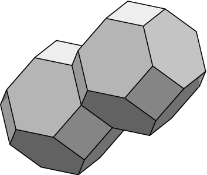

数据文件通过为每个方向指定边是正向环绕（+）、负向环绕（-） 还是不环绕（*）来处理边在环面上的环绕方式。
请注意数据文件中关键字 TORUS_FILLED 的使用。
这告知 Evolver 其中一个体积约束是多余的，从而避免在施加体积约束时
出现奇异矩阵。也可以只使用 TORUS 并仅施加一个体积约束。
环面中表面的显示可以通过多种方式实现。
connected
命令（我最喜欢的）使每个体显示为一个整体。
clipped
命令显示裁剪到基本平行六面体的表面。
raw_cells
命令显示未编辑的原始表面。
Weaire-Phelan 结构
[WP]
位于数据文件 phelanc.fe 中。
它比 Kelvin 的结构面积小 0.3%。
|
 |
初始的两单元 Kelvin 形状。请注意，由于周期性， 单个顶点或边可能会在图像中多次出现。 |
// twointor.fe // Two Kelvin tetrakaidecahedra in a torus. TORUS_FILLED // signals that domain is a torus and bodies fill it. periods 1.000000 0.000000 0.000000 0.000000 1.000000 0.000000 0.000000 0.000000 1.000000 vertices // values from another program 1 0.499733 0.015302 0.792314 2 0.270081 0.015548 0.500199 3 0.026251 0.264043 0.500458 4 0.755123 0.015258 0.499302 5 0.026509 0.499036 0.794636 6 0.500631 0.015486 0.293622 7 0.025918 0.750639 0.499952 8 0.499627 0.251759 0.087858 9 0.256701 0.499113 0.087842 10 0.026281 0.500286 0.292918 11 0.500693 0.765009 0.086526 12 0.770240 0.499837 0.087382 edges // with wraps in axis directions 1 1 2 * * * 2 2 3 * * * 3 1 4 * * * 4 3 5 * * * 5 2 6 * * * 6 2 7 * - * 7 1 8 * * + 8 4 6 * * * 9 5 9 * * + 10 3 10 * * * 11 3 4 - * * 12 6 8 * * * 13 6 11 * - * 14 7 4 - + * 15 8 12 * * * 16 9 8 * * * 17 9 11 * * * 18 10 7 * * * 19 11 1 * + - 20 12 5 + * - 21 5 7 * * * 22 11 12 * * * 23 10 12 - * * 24 9 10 * * * faces 1 1 2 4 9 16 -7 2 -2 5 12 -16 24 -10 3 -4 10 18 -21 4 7 15 20 -4 11 -3 5 -1 3 8 -5 6 6 14 -11 -2 7 5 13 -17 24 18 -6 8 -12 13 19 7 9 -16 17 22 -15 10 -10 11 8 12 15 -23 11 -21 9 17 19 1 6 12 -14 -18 23 -22 -13 -8 13 -24 -9 -20 -23 14 -19 22 20 21 14 -3 bodies 1 -1 -2 -3 -4 -5 9 7 11 -9 10 12 5 14 3 volume 0.500 2 2 -6 -7 8 -10 -12 -11 -13 1 13 -14 6 4 -8 volume 0.500进行一些细化和迭代后可以看出，最优形状会略有弯曲。